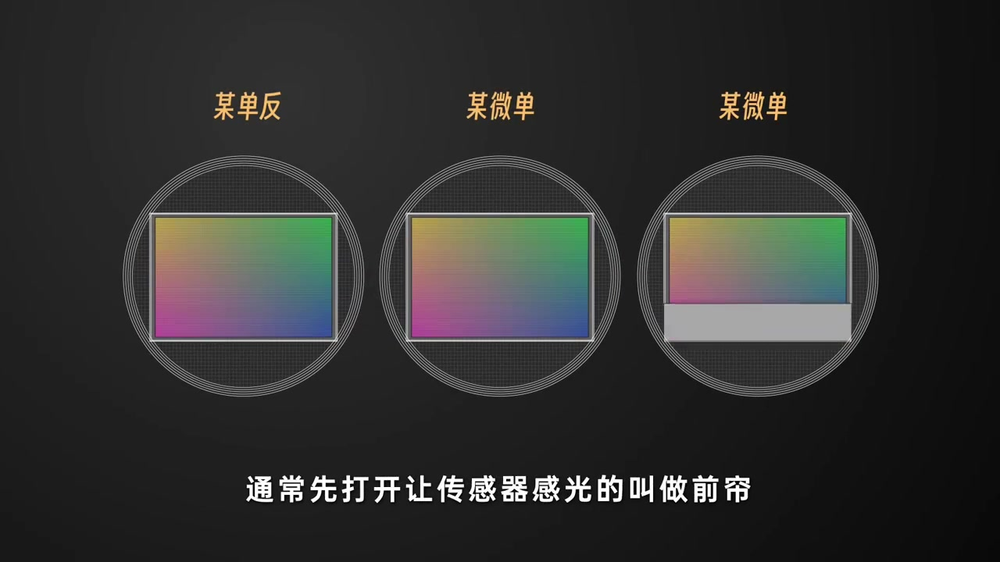
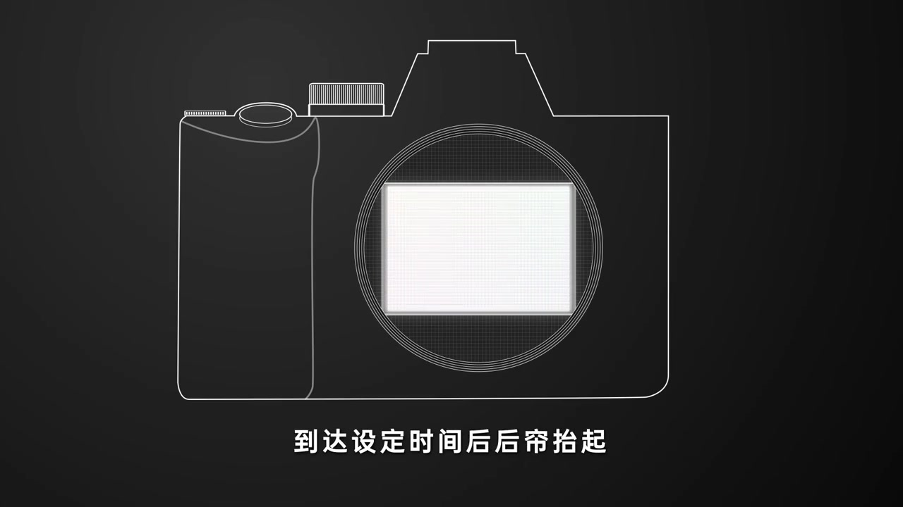
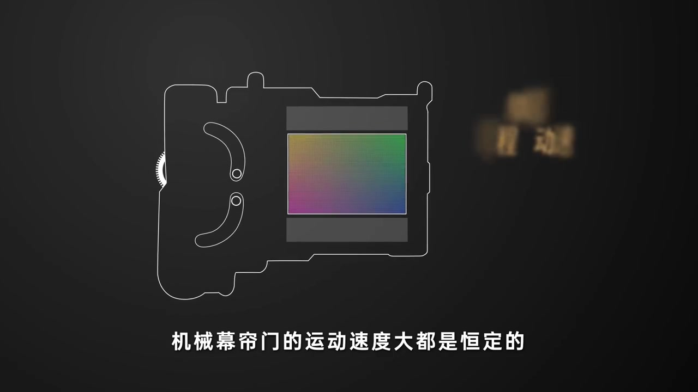
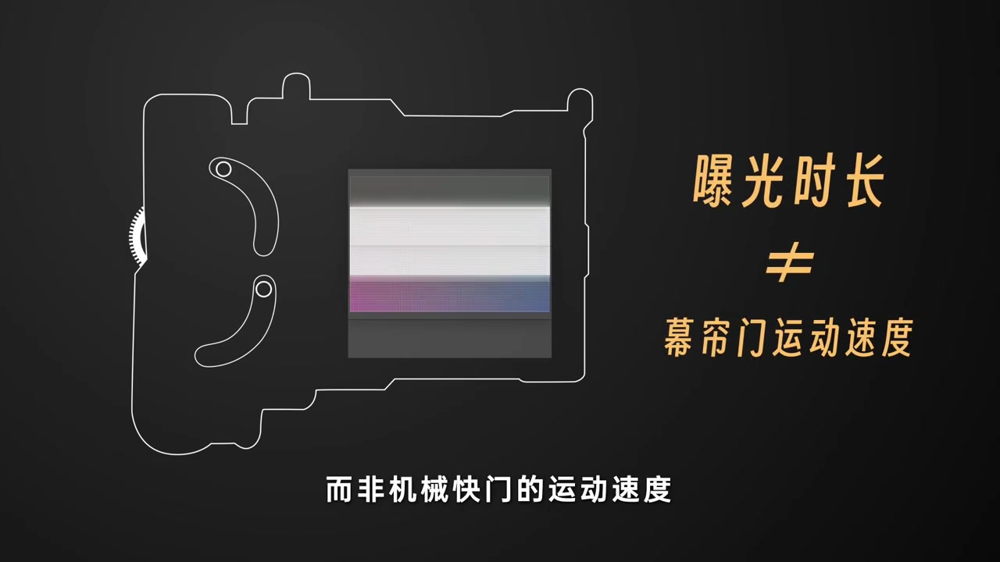
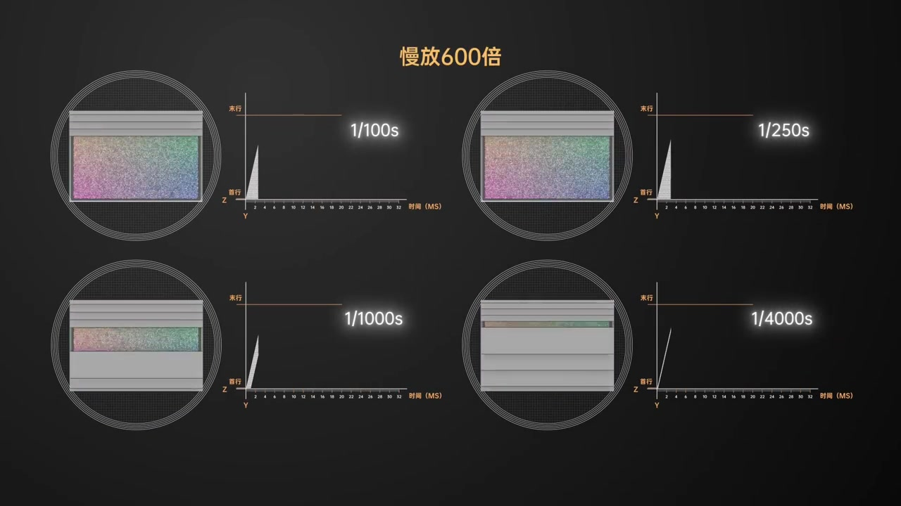
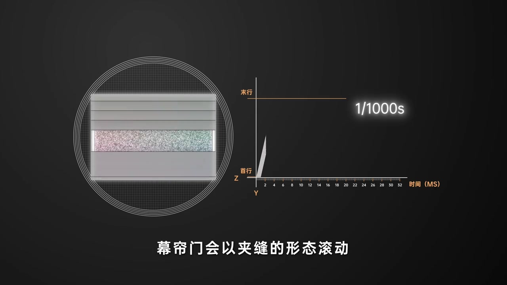
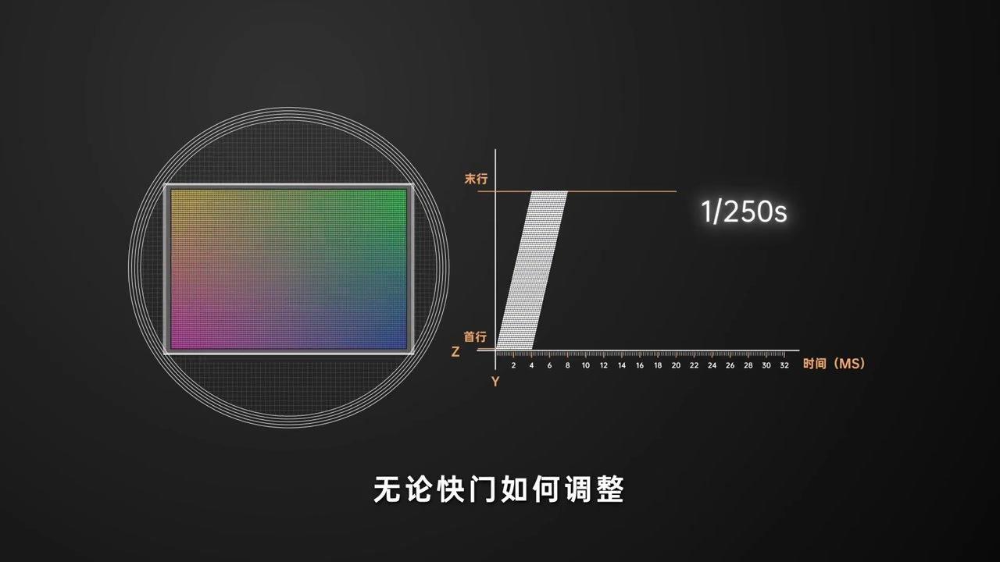

开场：大多数机械快门长什么样
深色底上先画出相机机身线稿，传感器窗口上下各有一条灰色幕帘。旁白直接落点：目前大多数机械快门，采用的都是纵置前后双幕帘结构。不同相机的幕帘运动次序会有差别，但「前后两帘、竖直方向走」是这集的共同骨架。
画面字幕：「采用的都是纵置前后双幕帘的结构」
说明：Whisper 常把「快门」识成「宽门」，「幕帘」识成「幕连」，「纵置」识成「纵至」，「CMOS」识成「SIMOS」，「前帘 / 后帘」识成「前脸 / 后脸」，「恒定」识成「横定 / 衡定」，「进光量」识成「监光量」。下文叙述以可见字幕与动画画面为准；页面末尾仍完整保留全部 Whisper 分段。
命名：先打开的叫前帘，后关闭的叫后帘
画面切到三台相机的卡口俯视：某单反、某微单、再一台微单。第三台卡口里，灰色幕帘正从下方向上遮住传感器一截。旁白给出分工：通常先打开、让传感器开始感光的，叫做前帘；之后关闭、结束感光的，叫做后帘。
画面字幕：「通常先打开让传感器感光的叫做前帘」

按下快门后：清空电荷、逐行感光、再复位
旁白按时间顺序演示一整次拍摄：按下快门后前帘落下，相机清空 CMOS 中的电荷并开始感光；前帘抬起后，传感器从下至上依次接触光线；到达设定时间后后帘抬起，此时 CMOS 仍处在感光状态，等所有信号逐行读出完毕，后帘复位，一次拍摄完成。
画面字幕：「到达设定时间后后帘抬起」

惯性思维：1/100、1/1000……是幕帘「跑」得有多快？
屏幕上列出从 10s 到 1/8000s 的一串快门速度。旁白点破常见误区：惯性思维会让人以为这些数字指的是机械幕帘门的运动速度。听上去很合理——实则不然。
画面字幕：「惯性思维」
纠正：幕帘运动速度大多恒定，约为 1/250 秒（4 毫秒）
为了方便控制曝光时长，机械幕帘的运动速度大多是恒定的，一般为 1/250 秒，也就是 4 毫秒。所以准确来说：我们常说的「快门速度」通常指的是曝光时长，而非机械快门的运动速度。
画面字幕：「曝光时长 ≠ 幕帘门运动速度」


那怎么精确控制曝光？很简单：间隔
既然幕帘运动速度恒定，精确控光就靠前后幕帘开合的间隔。动画先搭一张图：X 轴是 CMOS 的像素列，Y 轴是像素行；因为是依次逐行曝光，再加一条时间轴 Z，用来解读不同快门下每行像素的曝光时长，以及它们如何开始和结束。
画面字幕：「X轴为CMOS的像素列」
600 倍慢放：缝越宽越亮，缝越窄越暗
画面标题「慢放 600 倍」，四象限对照 1/100s、1/250s、1/1000s、1/4000s：左侧是传感器被幕帘缝隙扫过的样子，右侧是「首行→末行」对时间的曝光带。旁白总结：前后幕帘开合间隔越大，CMOS 接受光线的时间越长，其他参数不变时进光量越多、画面更亮；反之间隔越小，进光量更少、画面更暗。
画面字幕：「进光量更少因此画面也就越暗」

约 01:42—01:55 一段 Whisper 反复输出「所以它们的视频也就越短」，与画面字幕和前后文不符，疑为识别幻觉。实录叙述跳过该噪声段；末尾转录仍按原始分段完整保留。
曝光短于 4ms：幕帘以夹缝形态滚动
旁白回到机制：机械快门靠幕帘开合遮挡来控曝光，幕帘运动速度恒定为 4 毫秒。这意味着——当曝光时间小于这个值，幕帘门会以夹缝形态滚动，CMOS 没有机会整面同时露出；当曝光时间大于或等于 4 毫秒时，CMOS 会有一段时间整面同时露出，外界施加的光就能被整个传感器均匀捕获。
画面字幕：「幕帘门会以夹缝的形态滚动」

为什么闪光同步上限常是 1/250 秒？还有行间 4ms 时差
正因为「整面同时露出」需要曝光时间 ≥ 约 4ms，多数闪光灯同步速度上限为 1/250 秒。细心观众会发现：无论快门如何调整，CMOS 上下行两端都会有约 4 毫秒的时间差；这个时间差在电子快门中尤为明显——本集在此收束，为后续电子快门话题留钩子。
画面字幕：「无论快门如何调整」
